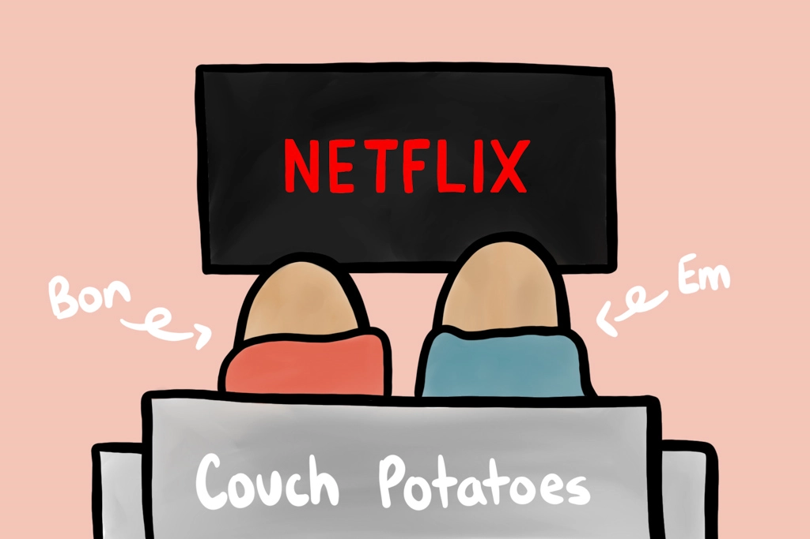
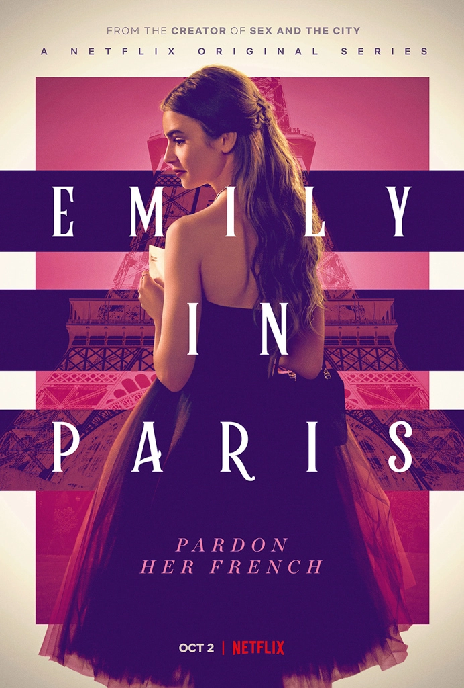
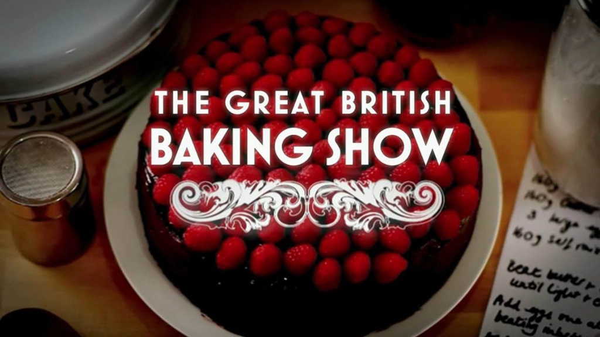
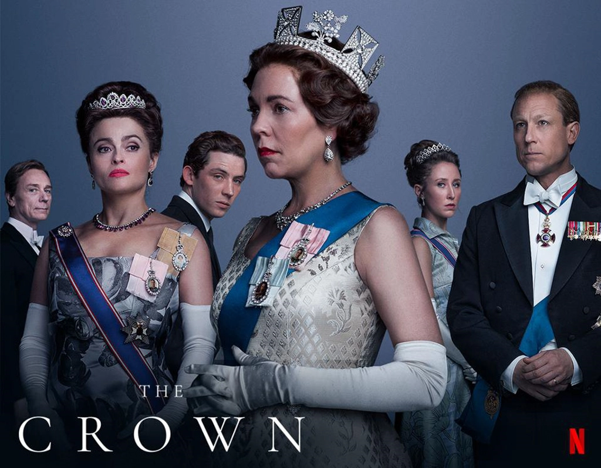
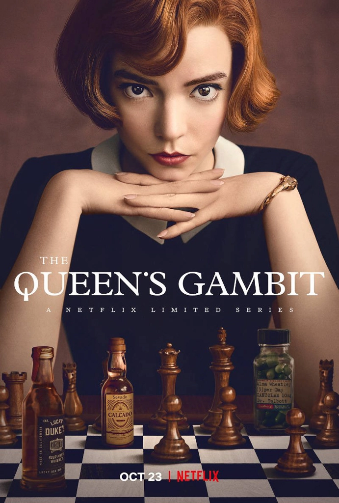
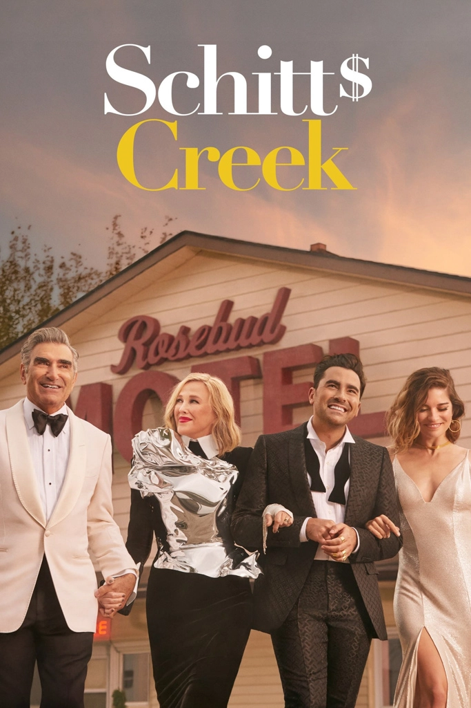

Favorite Shows to Binge from 2020
Jan 10 - Written by Bonnie and Emily

A new year means a whole new set of tv shows to binge on Netflix or any of the many other subscription based sites out there now.
What's even better is that teleparty now works on several different streaming sites including HBO Max, Hulu, and Disney Plus so you can now binge all the shows with your friends from the comfort of your favorite cozy spot. As avid tv watchers, we thought we would share some of our favorite TV shows we watched this past year that are available on these streaming sites so that you guys can spend the next month catching up on all the best shows from 2020.
Here is the list of some of the binge-worthy shows we’ve spent a lot of our time on this past year!
Emily in Paris
Emily in Paris is a great show to watch when you’re just relaxing or working on a craft on the side. The show is humorous, sweet, and touching all at the same time as we watch Emily’s journey moving from Chicago to Paris. Although all the french culture jokes may not be entirely accurate it definitely makes for a witty and fun show to watch during the day. Most of all, it's just so great to see all the beautiful scenery of Paris and the way the culture clashes unfold in the show. Definitely a fun show to watch with a group of friends as well!
The Great British Baking Show
As you may know we are both very big baking lovers and so we had to include a food related show into this list! The Great British Baking Show has been a favorite of ours for a while now, their participants and hosts are down to earth, humorous, and lovable making them into a few TV personalities that we’ve come to love season after season. With a new season of course there were even more pastries and beautiful baked masterpieces to witness from the comfort of our beds. The new participants in the newest season of the show were just as witty and sweet and it's always an enjoyable journey watching them grow and learn as the competition progresses. They’re all so supportive of one another and it’s what makes this baking competition stand out among all the others!
The Crown
The Crown has been a fan favorite on Netflix for a while now, a show that you all may have heard of as it's been blowing up these past few months since it’s newest season aired on Netflix. A show filled with drama, love, and mystery, that gives us a glimpse into the royal life of Britain and a fictional inside scoop on the events that unfolded in European history. But what makes this show particularly binge-worthy this year you may ask? The infamous Princess Diana finally makes her appearance in the show with an uncanny actress that portrays the story that took place years ago. And of course a new season means a binging session to refresh our memories on the past 3 seasons! This is definitely a show that will keep you on your toes and on your couch for a while.
The Queen's Gambit
The Queen's Gambit is a new show released by Netflix that follows the life of a chess player from the start of her career to where she is now. The show follows the life of Beth Harmon, an orphan growing up in the Cold War era as she battles addiction and becoming a chess prodigy. This show may be a bit dark for some viewers, but it’s definitely worth the watch as you can’t help but fall in love with all the characters supporting Beth’s journey. This show will make you fall in love with chess and keep you glued to your screens for hours as we go through the ups and downs of her career.
Schitt's Creek
To round up this list of shows for 2020, we have our all time favorite, Schitt’s Creek. The moment we started this show that follows the life of a wealthy family suddenly being stripped of all their wealth, we couldn’t stop watching. Each episode is only about 20 minutes long so it’s a very easily bingeable show. On top of that, the humor and character development in the show is just phenomenal. Each character was so well thought out that everything fits together seamlessly in the show. If you’re looking for something light and funny to watch, definitely check this one out because we guarantee you’ll fall in love with the father son duo that brought this show to life. The show has sadly come to an end but within the six seasons, you get the chance to watch all the characters grow and mature and fall in love with a small town they never knew they’d end up in. From what started out as a joke became a life changing experience for this family and town.